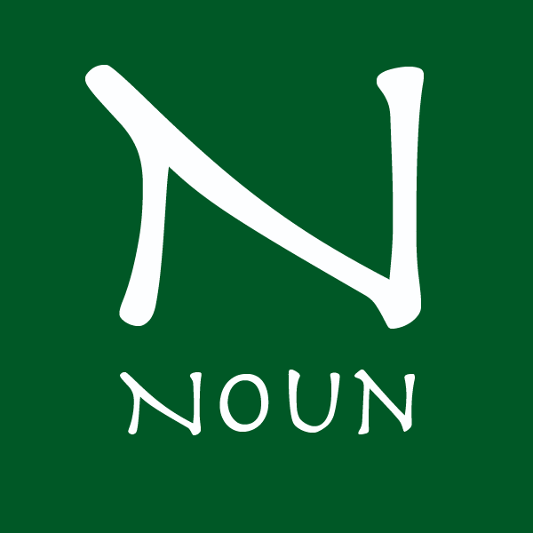

-
 Common nouns identify any person, place, thing or idea or unnamed nouns. Proper nouns identify a specific person, place, thing or idea or named noun.
Common examples: computer, car, game, girl, love, freedom Proper examples: Ford Explorer, Lord of the Rings, Brad Pitt, Indianapolis close
-
Abstract/Concrete
Abstract nouns identify ideas, feelings, or qualities that can not be seen or touched. Concrete nouns identify nouns you can see, taste, hear, smell or touch
Abstract examples: love, hate, courage, bravery, fear, history, truth. Concrete examples: car, book, movie, actor, mayor, athlete, city close
-
Plural
Plural nouns identify one or more nouns. For most plural nouns you simply add -s, but for others you may add -es or -ies
closeNouns ending in: Add Example -s,-ss, -zz, -ch, -sh, -x add -es buses, buzzes, foxes -o preceded by a vowel add -s studios, stereos -o preceded by a consonant Usually add -es heroes, potatoes -o preceded by a consonant #2 Sometimes add -s zeros, photos, pianos -y, preceded by a vowel add -s days, donkeys, keys -y preceded by a consonant usually change -y to -i and add -es cities, dairies, pennies -f or -fe Usually change -f to -v and add -es leaves, lives, calves -f or -fe #2 Sometimes add -s roofs, surfs, beliefs -
Possessive
Possessive nouns show ownership or possession. To form the possessive form of a noun, the writer must add either an 's or simply an ' depending on how that noun ends.
Nouns ending in:
Add
Example
Most singular nouns
add 's
John's books are new.
Singular nouns ending in "s"
add 's
The bus's tires are flat.
Plural nouns ending in "s"
add an '
The heroes' banquet is tonight at 9:00.
Plural nouns not ending in "s"
Sometimes add 's
The men's room is located on the 3rd floor.
-
Collective
Collective nouns identify groups of people or things. Most collective nouns are singular; however, collective nouns can take either a singular or plural verb depending on how it is used in the sentence. The noun is singular when all members of the group act as a single unit, but it is plural if they do not act as a single unit. Click for examples
close
For example:
(singular)The team shares the field with its opponent. (singular)The committee discusses their reactions.
(plural)The committee disagree among themselves. -
Appositive
Appositives, or Appositive phrases, rename nouns to give a clear understanding of the identification of the noun. The noun is singular when all members of the group act as a single unit, but it is plural if they do not act as a single unit. For examples click
close For example:
Ms. Vb, the math teacher, explores math using real world examples and applications. -
Gerund
Gerunds, or Gerund phrases, are verbs ending in "-ing" which act as nouns. They occur when and action becomes an activity. For examples click
close
For example:
Claire walks for exercise. Walking for exercise is healthy. The verb "walks" becomes the activity of "walking" in the second sentence and has become the subject of the sentence.